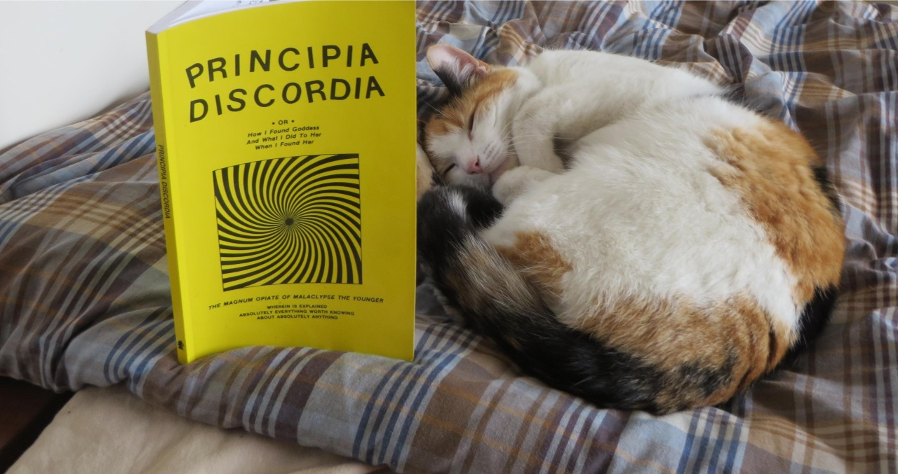

Pope Shizzle is a Metaphysical Anarkitten; she Hails Discordia and Fnords with the best, but when asked whether either Order or Disorder dominate the Pundamental Chaos of Surreality, she simply answers “Mu”.
The Cat Mu Catma Catchphrase Class is a set of Catmas passed as a vision on to me as Hecate possessed my Cat Pope Shizzle and ruffled through my library until she read the Principia and and discovered the follow formula:
A Cat Mu Catma = {Inexplicable Cultural Absurdity [on the interwebs]} in Pundamentalist Surreality is or seems to be explained by {Some Fnord pulled from the Chao / Some [actual or contrived] part of Discordian History}.
For example - ‘Cats are or seem to have been sent by Eris and Hecate to Infiltrate the Internet with the explicit mission of making sure no supremely powerful technology on Earth would be immune to Absurd and Pointless Punditry’.
But then again the Pointless can always be sharpened into a Point or Five and used with Intent.